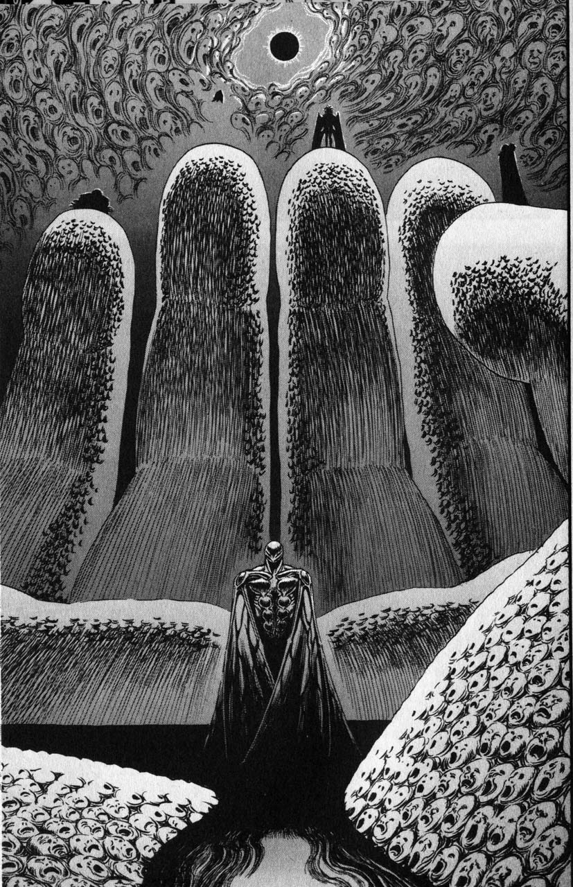

O que é Berserk?
Berserk é um mangá icônico criado por Kentaro Miura, conhecido por sua narrativa intensa, arte detalhada e temas profundos. A história segue Guts, um guerreiro marcado por um destino cruel, que enfrenta inimigos sobrenaturais e humanos enquanto busca vingança contra Griffith, seu antigo amigo e líder dos Bando do Falcão. Com uma mistura de fantasia sombria, batalhas épicas e reflexões sobre destino e livre-arbítrio, Berserk se tornou uma das obras mais influentes do gênero.
https://br.ign.com/berserk/82247/gallery/os-principais-personagens-de-berserk
Arco do Espadachim Negro
Após eventos traumáticos, Guts se torna um guerreiro errante, carregando uma espada gigantesca e um ódio inextinguível. Neste arco, a obra assume um tom sombrio e brutal, enquanto ele enfrenta inimigos sobrenaturais e descobre mais sobre o mundo caótico em que vive. A jornada de vingança e sobrevivência se entrelaça com questões filosóficas sobre destino e livre-arbítrio.

Arco da Era de Ouro
Acompanhamos a trajetória de Guts, um jovem mercenário que vive apenas para a batalha. Sua vida toma um novo rumo ao cruzar o caminho de um grupo de guerreiros carismáticos e ambiciosos, os Bando do Falcão. Este arco aprofunda temas como amizade, ambição e o custo do poder, além de estabelecer eventos cruciais para o futuro da história.

O Eclipse
Um evento trágico e inesquecível que marca uma virada definitiva na história de *Berserk*. Após alcançar o auge de sua jornada, o **Bando do Falcão** se vê diante de um destino cruel e inevitável. Neste momento, temas como sacrifício, ambição e a insignificância humana diante de forças superiores são explorados de forma brutal. O Eclipse muda para sempre a vida de Guts e redefine o tom da história, tornando-a ainda mais sombria e intensa.
